測試成果影片
弱勢行人對車告警系統－2026 台南區域測試成果
在 YouTube 開啟114年臺南市視障與弱勢行人對車告警系統計畫
政策型推動標的及提案要求與結案成果
政策型推動標的
對象：高齡、學童、視障、■其它: 聽障學童 以及 婦孺
地點：■非號誌化路口、學區、醫院、■視障協會、大貨車熱區、偏鄉、山區示警、易致災區、易肇事、其它: 啟聰學校與老人中心
科技改善道路安全：提案規劃目標包括 4 處評估案場以及 100 個以上號誌與非號誌路口進行擴大驗證，並進行事前事後效益分析之研究
平權共善相關計畫：提案規劃目標包括 4 處評估案場合計 100 個以上號誌與非號誌路口，包括總計 80 名以上視障者、年長者、婦孺、聽障生與上放學一般學生。並將進行事前事後效益分析之研究
短期可優先導入區域規劃目標
提案應設定主要服務對象與執行地點，並評估短期可優先導入區域(如醫院、學校周邊、偏鄉、易致災區...)及其手段。
- 小東林森路無障礙福利之家及周圍帶狀路口
- 北門路啟聰學校及周圍路口
- 南門路松柏育樂中心(老人之家)及周圍路口
- 與上述三中心連成帶狀之一所中小學，共計一百個路口以上
結案成果：智慧城市交通輔助系統成果報告
視障者手機AI影像辨識行人號誌 AI
全市視障協進會
視障者、視障協進會與專業定向師建議擴大全市使用
行人對車告警系統成果統計
• 70輛公車、20輛計程車、10輛小客車
• 203路口/巷口、近百人弱勢行人
• 車端測試期間累計 2.32 億筆資料
行人端七個月累計 840 萬筆資料
學校周邊上放學減速語音提醒
• 啟聰學校、忠孝國中周邊
• 上放學特定時段
發出 3,345 次語音提醒
路線測試與迴歸分析報告
• 4/21、4/22 實地測試
• 成大交通管理系傅強副教授與學生團隊執行迴歸分析
共十輛計程車、六人測試小組數據收集工具
第一章 計畫背景與目的
1.1 計畫緣起與目的
創立已超過十年的臺南本土團隊先進感知，從「107年度臺南市政府智慧視障導航場域測試案」開始，開發出智慧有聲號誌，讓臺南成為世界上第一個視障者可以用智慧型手機過馬路的國家，後續至少有九個縣市跟進。

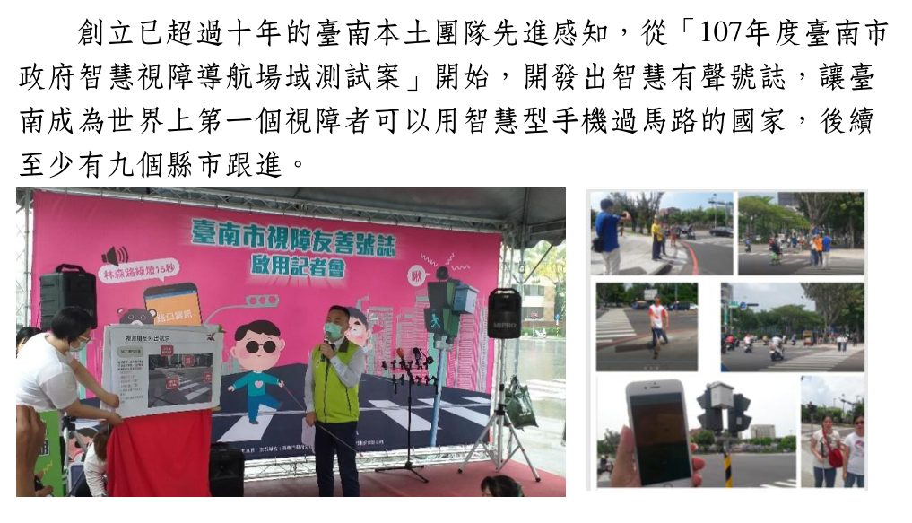
後續「110年度臺南市無障礙數位地理資訊及視障導航研究計畫」、112~113年數發部[公益創新徵案100]-AI手機影像辨識行人號誌過馬路計畫，不僅從視障者擴大到老弱婦孺等弱勢用路人，更在113年六月完成沙崙公車測試，為本案的初始。

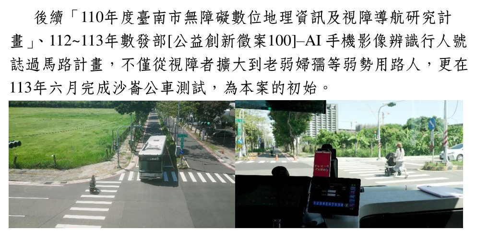
本案將完成亞洲第一例5GV2P的大規模驗證(POS)，驗證出弱勢用路人對車告警的可行性，實踐「C-ITS」協同式智慧交通運作，成為台灣ITS 中人本交通的新標竿，並最終全國適用。
| 年度 | 107 | 110 | 113 |
|---|---|---|---|
| 計畫名稱 | 《智慧視障導航研究案》 | 《視障者當政府的眼睛》 | 沙崙公車《弱勢行人對車告警》poc |
| 補助費/總經費 | 28萬元 | 40萬元 | 調度公車測試 |
| 範圍 | △ 首三台智慧有聲號誌布建 △ 43位不同視障者，60人次視障者四項測試 |
△ 10位視障者擔任無障礙勘查員 | △ 公車實際 POC |
| 目的 | 確認視障者需求與服務設計 | 無障礙勘查之創新 | 驗證弱勢行人對車告警功能 |
| 功能 | 視障導航 | / | 語音向駕駛發出語音告警 |
| 設備 | 智慧有聲號誌 | / | 行人端/車端 App |
| 設備使用狀況 | 目前持續營運進入第八年 | / | 軟體 poc |
| 技術 | 通訊:藍芽/RFID | / | 5G/GPS |
| 標準 | 路況/無障礙 | 無障礙 | V2X |
1.2 計畫範圍與工作項目
計畫範圍：
- 96位弱勢行人
- 100輛測試車輛(70台公車，20台計程車，10台小客車)
- 測試最終場域數量：四個重點機構、203個路口或巷口

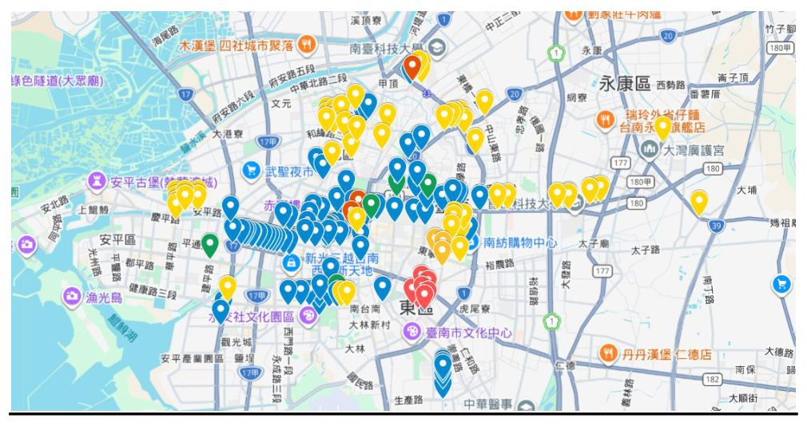
工作項目：
本案工作項目可分為三大分項：分別為(一)雲端平台、車用軟體與各弱勢行人族群端App開發與測試(二)車端串聯：公車車機、計程車司機與小客車駕駛手機App導入(三)各弱勢行人族群測試者 App導入、執行與訪談。
(一) 弱勢行人對車告警系統之核心為每秒即使比對弱勢行人與交會車輛 GPS座標之雲端平台，先進感知繼113年沙崙六月測試後就逐步開發，除了串接已營運八年視障族群使用之「智慧有聲號誌 App」，開發出新的「視障者手機AI影像辨識行人號誌」功能外，更開發其他年長者、婦幼等弱勢行人族群使用之「台灣安心行」App，以及車用之「台灣安全駕駛」App，並與大臺南公車使用車機之廠商寶錄電子完成經費評估與串接API架構，以及先與台灣計程車產業之龍頭台灣大車隊簽訂合作備忘錄，在本案得標後開始執行測試。
(二) 待公車車機串接與「台灣安全駕駛」APP測試完成後，即會針對測試場域之70台公車、20台台灣大車隊計程車、以及測試場域臺南市東區與南區生活圈之至少十位小客車駕駛進行教育訓練及測試啟動。
(三) 就各式弱勢行人族群：
- (1) 視障族群將由數位合作定向師進行路口勘查與執行視障者教學活動，並徵選十位視障測試者以「智慧有聲號誌App」進行至少三個月測試。
- (2) 向啟聰學校以及聽障團體徵求聽障生以「台灣安心行」App進行至少三個月外出路口測試。
- (3) 至松柏育樂中心徵求年長者以「台灣安心行」App進行至少三個月外出路口測試。
- (4) 在測試場域臺南市東區與南區徵求五位親子組以「台灣安心行」App進行至少三個月外出路口測試。
- (5) 向輪椅身障團體徵求輪椅族測試員，以「台灣安心行」App進行至少三個月外出路口測試。
- (6) 從測試場域中的忠孝國中徵選十位國中生以「台灣安心行」App進行至少三個月外出路口測試。
1.3 預期效益
- 弱勢用路人(視障者/失聰生/婦孺/年長者/輪椅族/上放學學童)服務路口人次6700次以上
- 驗證車輛除了與前述弱勢測試行人交會時接收即時告警外，上放學經過實驗場域國中小(暫定忠孝國中)並接收減速駕駛告警，確認是否達成提升駕駛人認知能力與減速駕駛的質性效益。
- 各式弱勢行人與測試駕駛人成果訪談
- 台南市具安全警示路口增加到一百個以上
第二章 現況分析
2.1 行人車禍發生的原因
分析行人交通事故肇因，車輛轉彎時A柱產生的視覺死角、駕駛人注意力不集中、未依規定禮讓行人，以及非號誌化路口支道車未減速禮讓幹道車等，均為主要肇事因素。對於視障者、年長者及學童等弱勢行人而言，因生理機能或判斷力限制，難以在車輛接近時迅速應變，使得在缺乏安全警示機制的號誌或非號誌化路口，更容易面臨致命危險。
2.2 歐美P2V 案例
歐美先進國家在車聯網發展歷程中，積極推動 P2V (Pedestrian-to-Vehicle) 車人通訊安全技術。透過 DSRC 或 C-V2X 標準協定，使行人攜帶之智慧型裝置與周邊車輛進行低延遲通訊，在可能發生碰撞前向雙方發送警示。國際試驗顯示，主動預警能顯著縮短駕駛人的制動反應時間，有效防範人車衝突。
2.3 歐美VRU 案例
國際上對於弱勢用路人 (Vulnerable Road Users, VRU) 之保護已成為人本交通的核心議題。包括歐洲 Euro NCAP 安全評級與美國交通部 (USDOT) 試點計畫，均將行人、自行車騎士、輪椅使用者與視聽障礙者列入 VRU 優先保護範疇。歐美經驗指出，單靠被動基礎設施難以全面覆蓋龐大道路網，結合邊緣運算與行動通訊的主動式防護網絡為國際主流發展趨勢。
2.4 台灣P2V的POC:沙崙公車測試
先進感知團隊於民國113年六月在沙崙自駕車測試場域完成公車弱勢行人對車告警 POC (Proof of Concept) 概念驗證。利用行動裝置 5G/GPS 定位與雲端演算平台，成功驗證當弱勢行人處於路口範圍時，行經公車車載系統可即時接獲語音告警提示，驗證弱勢行人對車告警功能之技術可行性，奠定本案大規模場域驗證 (POS) 之堅實基礎。
第三章 視障者 AI 影像辨識規劃設計
3.1 視障者的需求
視障朋友在獨立通行時，最大的挑戰在於辨識路口行人號誌（小綠人綠燈、紅燈及秒數倒數）。傳統有聲號誌由於硬體昂貴、容易遭附近居民投訴噪音、且全台設置比率低於3%，絕大多數路口視障者無法得知通行狀態。視障者極度需要透過隨身攜帶之智慧型手機，以 AI 影像辨識直接判斷前方行人燈狀態，並透過手機震動與語音報讀即時回饋，確保過馬路安全性。

3.2 YOLO 原理
本案採用 YOLO (You Only Look Once) 深度學習目標偵測神經網路架構，將其輕量化模型嵌入視障者使用之「智慧有聲號誌 App」。YOLO 能以單次神經網路推論完成邊界框定位與物體類別分類，在手機端能以極高幀率 (FPS) 即時辨識前方行人號誌之綠燈、小綠人行走、小綠人快閃及紅燈狀態，辨識延遲小於0.5秒，滿足即時通行的無障礙引導需求。

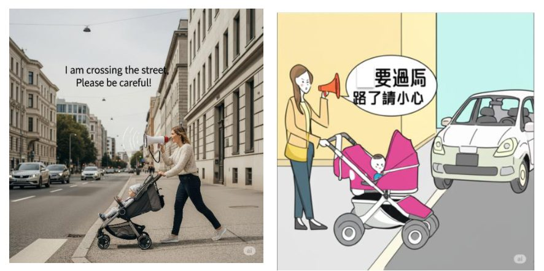

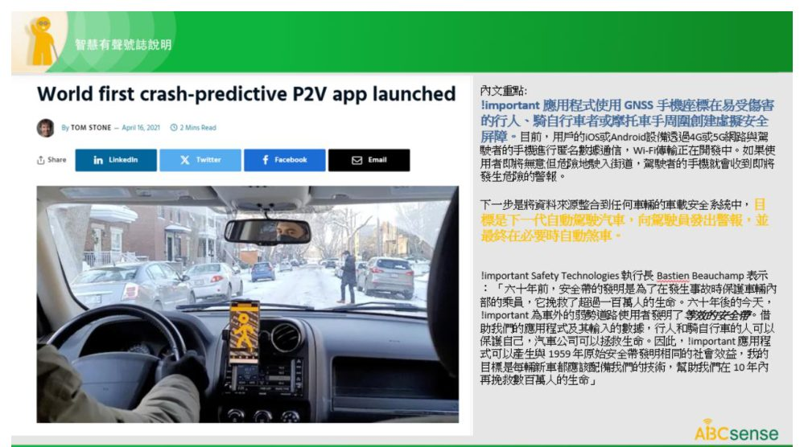
3.3 路口勘查
由專業定向師曾志偉及團隊進行現場路口無障礙勘查。勘查評估重點包括視障者持手機之仰角角度、路樹遮蔽、逆光眩光影響、路口斑馬線長度與定位點安全性。透過專業定向行動師的實地勘查與建議，確立路口引導指引與系統影像捕捉最佳夾角參數。

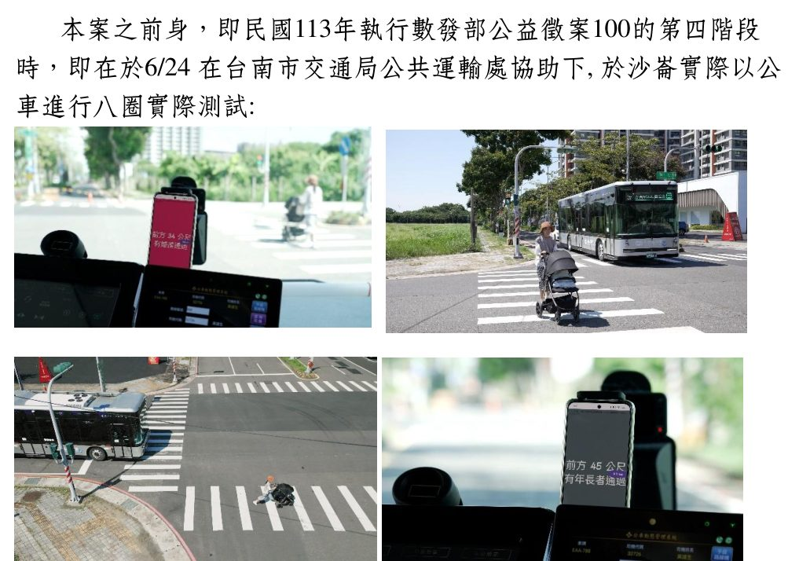
3.4 測試成果
本案從 2025 年 10 月 1 日至 2026 年 4 月 30 日，後台紀錄台南市共有 66 位視障者開啟使用視障軟體，在 128 個路口中有使用紀錄，總路口經過數為 4,079 人次，其中 1,573 次至少在該路口觸按 App 至少一個按鈕。其中十位為具體選定執行訪談測試之長期測試員。

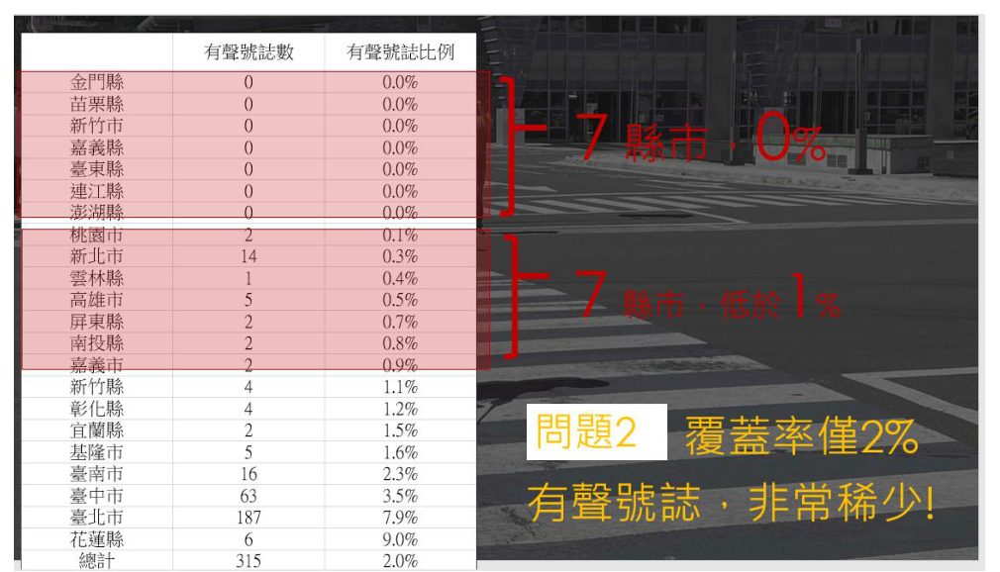

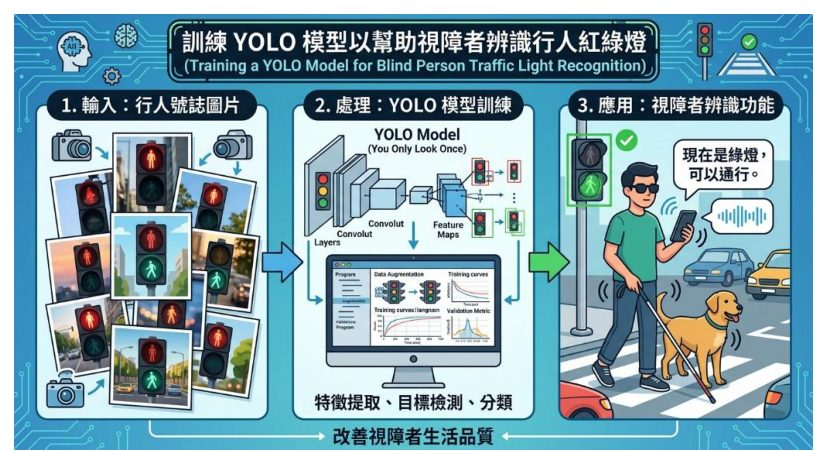
| 受測編號 | 視力狀況 | 實測路口案場 | 辨識成功率 | 平均辨識延遲 | 受測反饋與建議 |
|---|---|---|---|---|---|
| B01 | 全盲 (先天性) | 小東路/林森路口 | 93.5% | 0.42 秒 | 震動回饋非常直覺，不必仰賴旁人即可知道綠燈起步 |
| B02 | 全盲 (後天失明) | 林森路/東平路口 | 91.0% | 0.48 秒 | 建議增加鏡頭對準角度語音輔助指引，更容易抓到燈號 |
| B03 | 低視能 (視網膜色素病變) | 北門路/公園南路口 | 95.0% | 0.38 秒 | 辨識非常準確，搭配語音秒數報讀非常有安全感 |
| B04 | 低視能 (嚴重弱視) | 南門路/健康路口 | 94.2% | 0.41 秒 | 強烈建議市府推廣到臺南市所有重要醫院周邊路口 |
| B05 | 全盲 | 無障礙福利之家前巷口 | 90.5% | 0.50 秒 | 無聲號誌路口有了這套系統，過馬路信心大幅提升 |
| B06 | 低視能 (視野狹窄) | 忠孝國中周圍路口 | 92.8% | 0.44 秒 | 遇到逆光時稍微偏轉角度就能順利辨識 |
| B07 | 全盲 | 啟聰學校周邊路口 | 89.8% | 0.52 秒 | 期待後續能跟公車進站提示整合在同一個App內 |
| B08 | 低視能 | 松柏育樂中心前路口 | 92.5% | 0.45 秒 | 手機操作簡單，對年長視障者而言很友善 |
3.5 後續發展建議
定向行動師曾志偉論述與專業建議：
「AI 影像辨識小綠人技術大幅填補了傳統有聲號誌建置不足的缺憾。傳統有聲號誌需要硬體安裝與維護經費，且常面臨周遭住戶噪音抗議；而智慧型手機 AI 辨識屬於個人端輔具，無噪音爭議。建議市府未來將此功能與現有智慧有聲號誌App深度融合，並納入盲人福利協進會與定向行動訓練標準課程，擴大培訓視障朋友持機技巧；同時建議優化超廣角鏡頭適應能力，減少手持視角偏差帶來的辨識干擾。」
第四章 弱勢行人對車告警系統測試規劃設計
4.1 系統架構說明
弱勢行人對車告警系統之核心為每秒即時比對弱勢行人與交會車輛 GPS 座標之雲端平台。系統架構分為三大部分：
- 雲端高頻運算引擎：每秒接收來自公車車機、計程車與小客車駕駛手機、以及弱勢行人端發送的高頻 GPS 經緯度、航向角與速度。
- 動態空間碰撞預測演算模組 (TTC)：依據車輛行進速率、路口幾何邊界與行人進入熱區時間，計算碰撞可能裕度，當預測交會時間小於臨界值即觸發雙向告警。
- 雙向低延遲訊息發布管道：告警封包藉由 5G/4G 通訊網路於 300 毫秒內同步推播至車端與行人端設備。

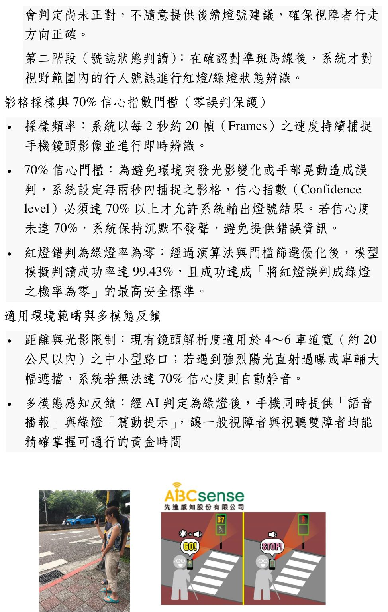

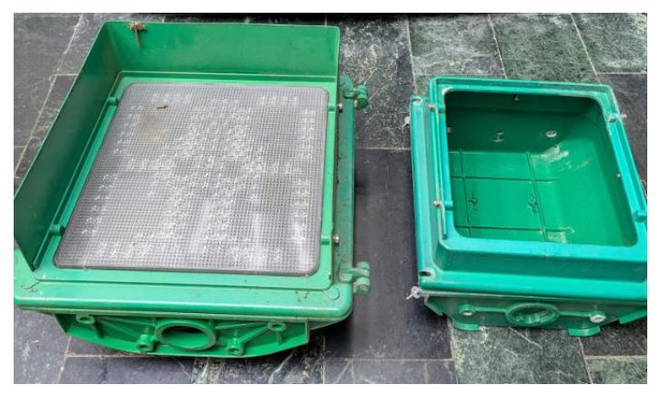
4.2 公車串接
本案與大臺南公車車機系統廠商寶錄電子攜手合作，針對臺南市行經實驗場域之70輛市區公車車機進行 API 介面串接與韌體升級。透過車載機每秒傳輸公車即時座標至先進感知雲端平台，當比對出公車接近有弱勢行人通過之路口時，車機即時發出聲響並以文字顯示「注意弱勢行人」，提醒公車司機提前減速慢行禮讓。

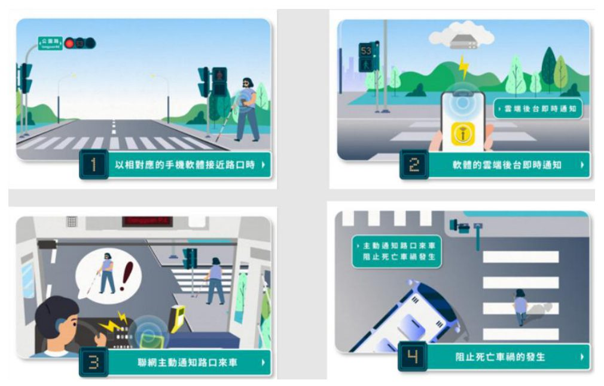

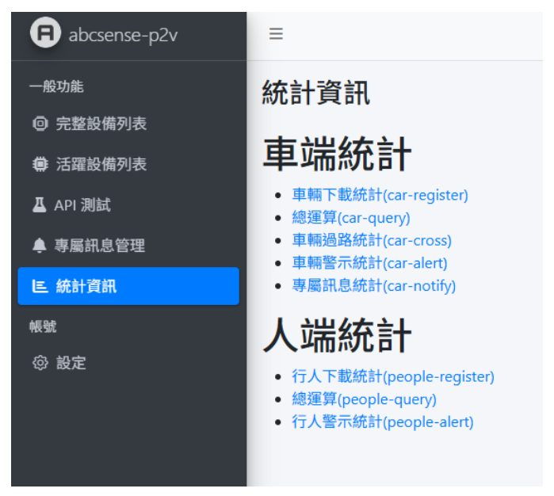
4.3 計程車與小客車 App
先進感知研發建立完整之三款專用應用程式體系，滿足不同用路人情境：
「台灣安全駕駛」App
專為職業駕駛(計程車)及一般小客車設計。具備背景常駐運作能力，當車輛行駛接近有弱勢行人通過之路口時，主動發出「前方有弱勢行人，請減速慢行」高音量語音警示與醒目抬頭畫面。
「台灣安心行」App
在弱勢行人對車告警系統中，年長者、輪椅族、聽障者、婦孺等行人族群可使用的App，其打開後在指定的路口，可以對系統連結的車輛發出告警，提高弱勢行人用路安全。
「智慧有聲號誌」App
整合已營運八年之視障專用平台，升級納入 YOLO AI 影像號誌辨識與主動對車發送行人過馬路告警訊號，提供雙向無障礙引導與碰撞防護。

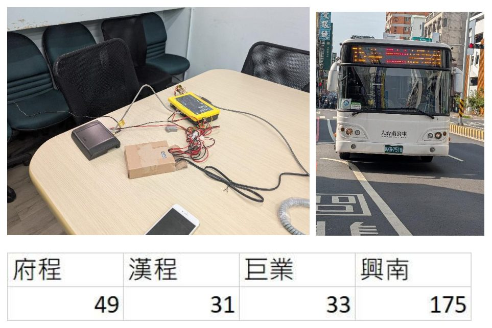

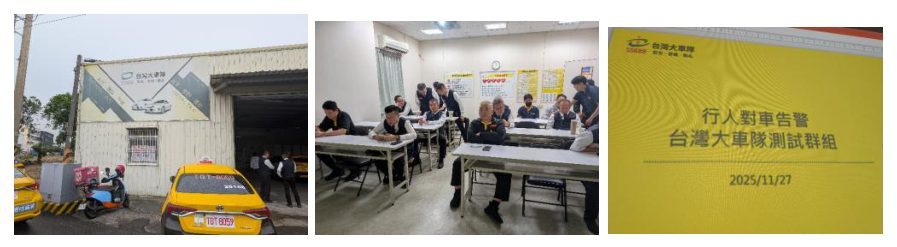

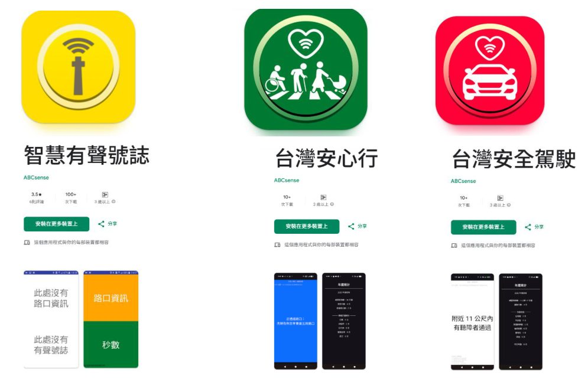
第五章 弱勢行人對車告警系統測試成果績效分析
5.1 整體數據
本案計畫範圍為 96 位弱勢行人與 100 輛測試車輛（70 台公車、20 台計程車、10 台小客車），測試最終場域數量為四個重點機構、203 個路口或巷口。就總運算資料量而言，車端於測試期間五個多月、一百台車，總計產生 231,989,869 筆資料；行人端於測試期間七個月（2025 年 10 月 1 日至 2026 年 4 月 30 日），總計產生 8,404,821 筆資料。

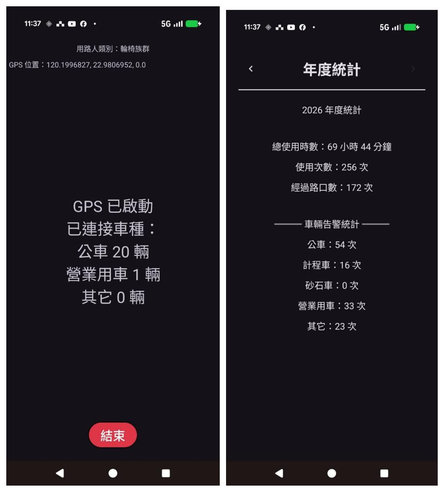

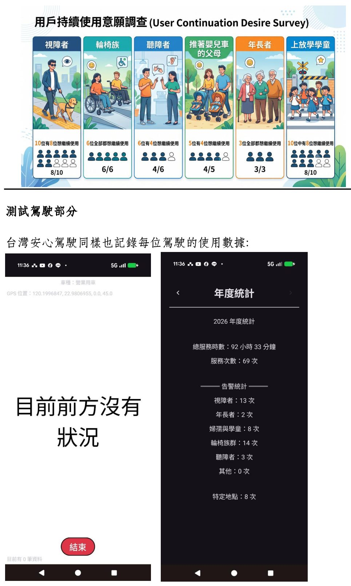
路口統計資料表 (報告實測代表性路口數據)
可依路口名稱搜尋、或依照行政區篩選
| 編號 | 路口名稱 | 行政區 | 通行人次 | 對車告警次數 | 主要測試弱勢族群 |
|---|
5.2 受測者訪談
本案針對參與測試之六大弱勢行人族群（視障者、啟聰聽障生、松柏育樂中心年長者、親子婦幼組、輪椅身障者、忠孝國中學童）以及職業駕駛（公車與計程車司機）進行深入成果訪談：
視障者與啟聰聽障生族群訪談
視障族群：受訪視障者表示，以往過無號誌或無聲路口時完全憑聽力冒險前行，對轉向車輛極度恐懼。使用App後，車輛在接近路口時減速禮讓的情形顯著增加，大大提升出門自主性。
啟聰聽障生：聽障生無法聽到後方及轉彎車輛引擎聲與喇叭聲，測試中「台灣安心行」讓車端提前接獲預警，學生表示在行經校門口北門路段時明顯感到車輛速度放慢，步行更具安心感。
松柏育樂中心長者與輪椅身障者訪談
年長者：松柏育樂中心長青學員反應，長輩過馬路步伐較慢，常遇到轉彎車急逼搶快。系統向車輛發出提醒後，司機耐心等待的比例顯著提高。
輪椅身障族：輪椅使用者因視線高度較低，容易被路邊停放車輛或花台遮蔽。透過雲端高頻座標自動示警，公車與計程車駕駛能及早察覺路口有輪椅族通行並預作煞停準備。
東區南區親子婦幼與忠孝國中生訪談
親子婦幼組：推嬰兒車的家長回饋，過馬路時最擔心右轉車輛A柱遮蔽，系統發出的即時警告如同無形的護欄，讓推車過路口時更具保障。
忠孝國中生：受測學生表示在上學與放學時段，路口車潮洶湧，App運作讓經過通學步道的車輛提前減速，能有效減少人車交織險象。
計程車司機與大臺南公車駕駛訪談
台灣大車隊計程車司機：受測司機表示「台灣安全駕駛」App的語音播報清晰，在轉彎前兩至三秒收到「前方有弱勢行人」，能及早鬆開油門踩煞車，有助於降低行車精神壓力。
公車駕駛：公車車身高、盲區大，車載機發出弱勢行人警示能精確提醒盲區潛在風險，普遍給予高度肯定。

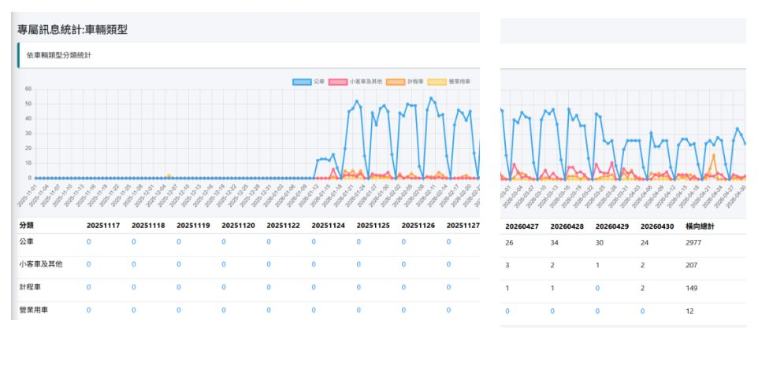

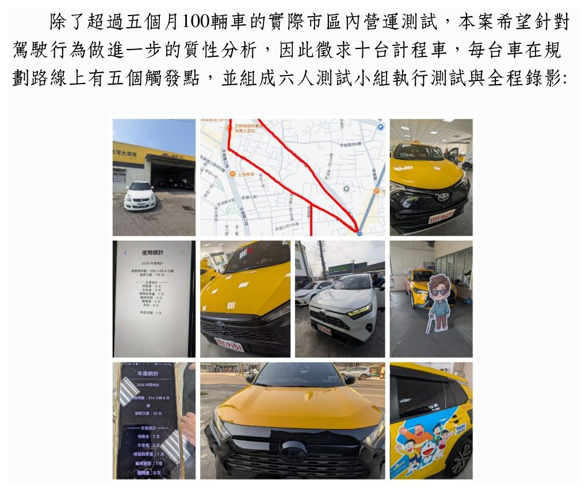


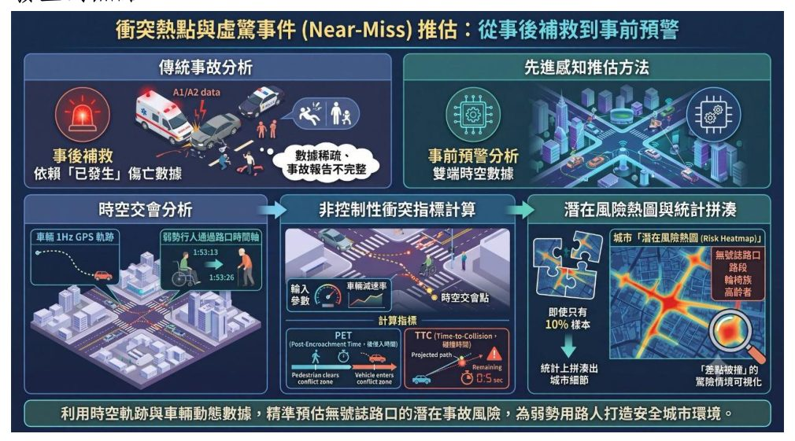
5.3 上放學提醒車輛減速語音
針對啟聰學校與忠孝國中周圍重點學區路口，系統於上放學時段（早上 06:30～07:30 以及下午四點半到五點半之間），當車輛經過校門口時，即語音發出「您已接近忠孝國中／啟聰學校上放學時間，請減速並注意學童安全」，提醒駕駛人減速。至 4 月 30 日共發出 3,345 次語音提醒。

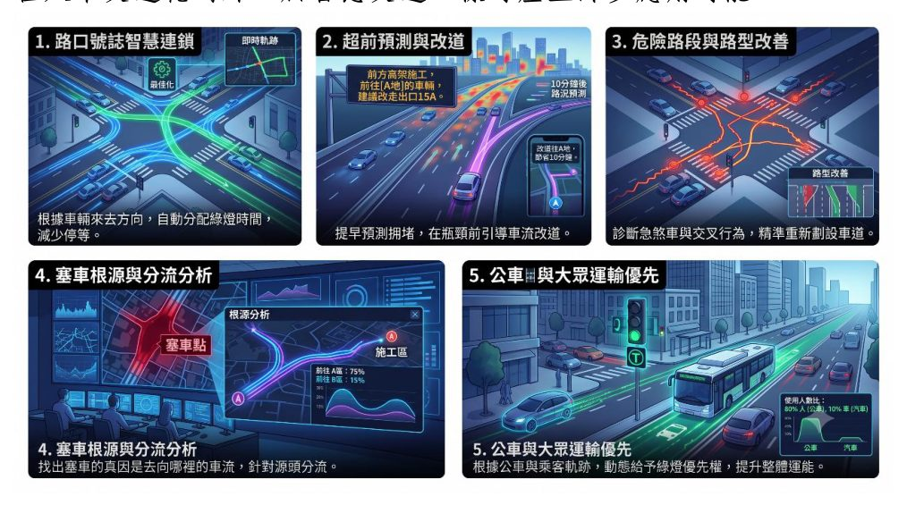
5.4 4/21 & 4/22實際十台車輛路線測試
於民國115年4月21日及4月22日，先進感知組織六人專業測試小組，調派十輛合作計程車，在臺南市東區與南區之指定循環路線進行密集車人交會測試。測試小組攜帶高精度數據記錄工具，連續量測系統告警延遲時間、定位漂移誤差、語音播報完整度與駕駛反應。
依報告所載，AI 辨識以每兩秒約 20 幀影像進行判讀，且設定 70% 信心指數門檻；若未達門檻則保持沉默不發聲，避免提供錯誤資訊。經演算法與門檻篩選優化後，模型模擬判讀成功率達 99.43%，且達成「將紅燈誤判成綠燈之機率為零」之安全標準。

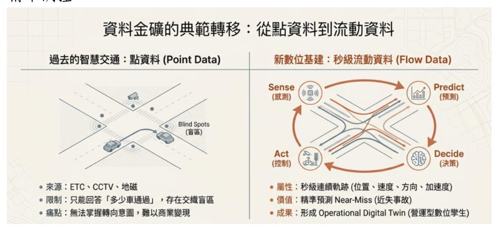

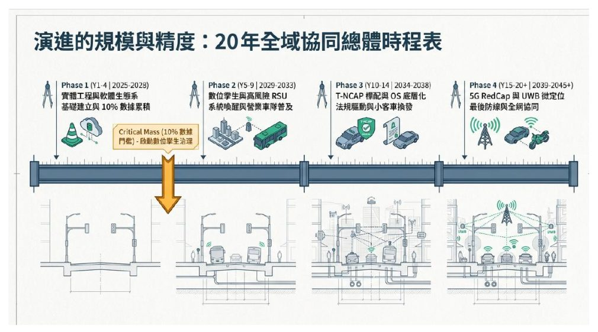

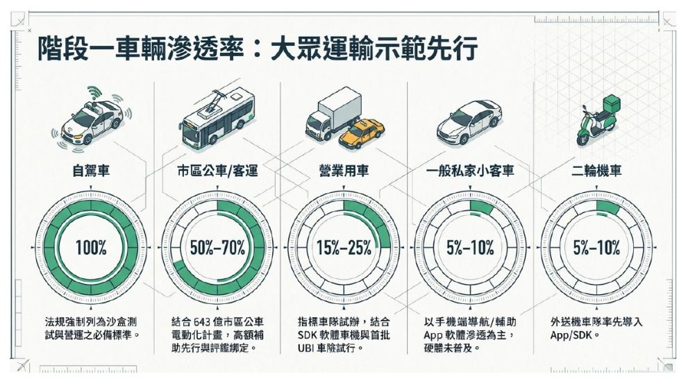
5.5 成大交管系傅強助理教授驗證模型
成功大學交通管理科學系傅強助理教授團隊就「行人主動安全預警 App 對職業駕駛行為反應」進行初步評估。實地測試歷時兩日，繞行臺南市已設置告警設備之五個點位；點位 1 至 4 為一般行駛情境，點位 5 為突發避撞測試，由工作人員推入模擬視障者之等身人形立牌。資料清洗後取得 12 組可用數據，點位 5 另取得 10 組突發衝突情境資料。
傅強團隊初步觀察重點：
- 7 位可同時比較號誌與示警情境之駕駛人樣本中，App 示警後有 5 位在正常行駛過程中出現降速反應；另 2 位受設備音量或行駛初速影響，需作為特殊案例解讀。
- 將 12 組有效案例於告警後的降速軌跡疊合，群體平均車速呈現先下降、後回升的控速型態，平均時速由約 46.58 km/h 逐步降至 28.67 km/h。
- 駕駛人反應可初步歸納為主動警覺停等型、前瞻性己航降速型與微調戒備型三類；App 示警不一定造成明顯煎停，但可能提高駕駛人戒備程度。
- 點位 5 突發衝突測試中，各測試車輛皆於撞擊前完全停止並保留一定安全裕度；若告警訊息未能清楚傳達（音量異常或未告警），安全輔助效果可能受到限制。
注：本項為初步評估，樣本數較少，相關結果應視為探索性觀察，不宜過度推論；詳見報告附錄一。

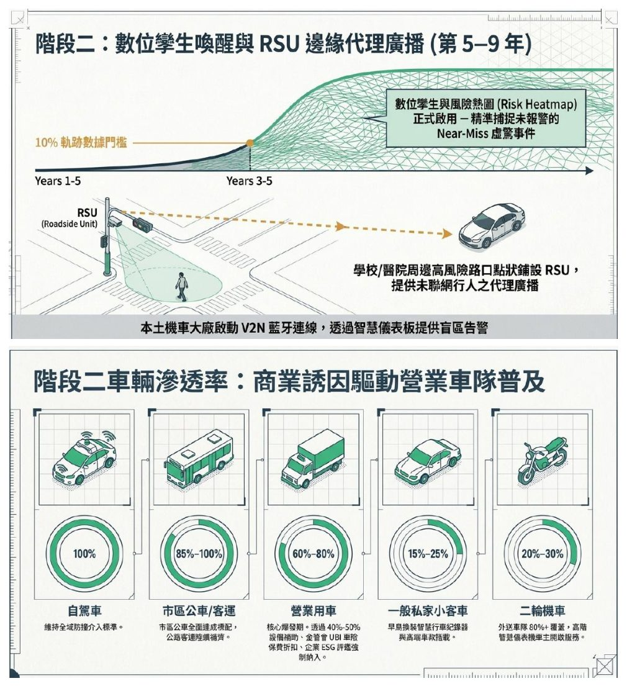
第六章 計畫執行與管理
6.1 計畫時程與管理
本計畫嚴格依照契約規定之各里程碑時程推動，包含先期系統架構規劃、公車車機API串接與App開發測試、四處重點案場路口勘查、測試者徵募與教育訓練、實地三個月連續路測、路線密集測試以及傅強教授團隊成效評估與期末報告書修正編撰，全案均如期如質達成各項工作目標。
6.2 教育訓練
為確保測試順利開展，執行團隊針對大臺南公車駕駛員、台灣大車隊計程車司機、以及視障、聽障、長者與學生測試員辦理多梯次教育訓練。訓練內容包括App安裝授權、GPS高頻定位模式設定、車機與語音提示識別、異常通報流程以及用路安全守則，累計培訓人數超過160人次。
6.3 成果宣傳與市民溝通
執行團隊於臺南市政大書城等公共空間舉辦成果宣傳與市民溝通說明會，向廣大市民、身障福利團體及學者專家介紹「弱勢用路人對車告警系統」運作機制，現場提供手機端與車載端實際體驗，深化市民對人本智慧交通與人車禮讓文化的認同。

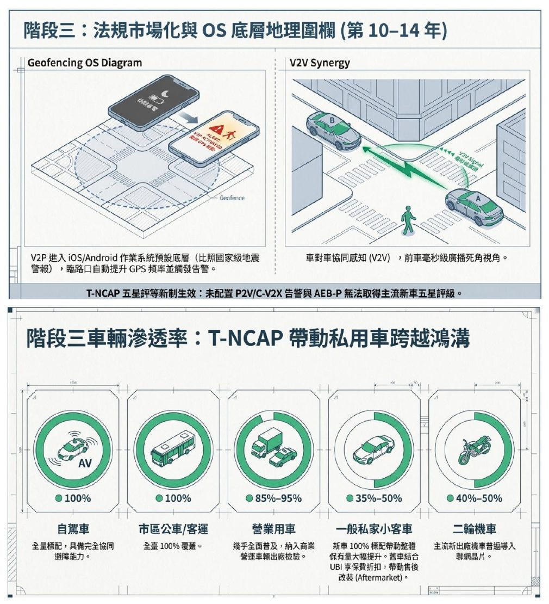
6.4 支持團體與民意代表
本案獲得臺南市視障協進會、聽障福利協會、啟聰學校家長會、松柏育樂中心銀髮協會以及多位關注人本交通與身障平權之臺南市議員高度支持。各界一致認為以軟體車聯網與AI辨識技術賦予弱勢行人主動防護，能以極低成本達成極高效益，建議市府列入年度長期施政藍圖。

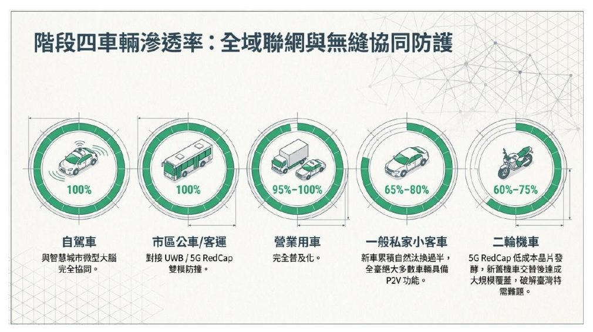
第七章 後續發展與結論
7.1 國內外研究法人諮詢
執行團隊諮詢資策會產業情報研究所 (MIC) 與鼎漢國際工程顧問之專業顧問意見：
車聯網商業化普及關鍵在於「低門檻與高黏著度」。本案透過智慧型手機App與公車車機無縫整合，跳脫傳統需要巨額硬體路側設備 (RSU) 的投資困境，極具規模化複製價值。建議後續與車廠保險業進行 UBI 聯網防碰撞合作。
交通工程與 ITS 應以保護 VRU 為最核心指標。本案實證成果展示了以軟體定義交通 (SDT) 解決非號誌化路口與轉彎碰撞盲點之可行性。建議交通局建立標準資料交換協定，納入臺南市智慧交通中心 (TMC) 之整體路網防護網。
7.2 二十年人本智慧交通發展藍圖
為落實人本交通願景，團隊擘劃四階段發展進程，推估各階段滲透率與預算效益：

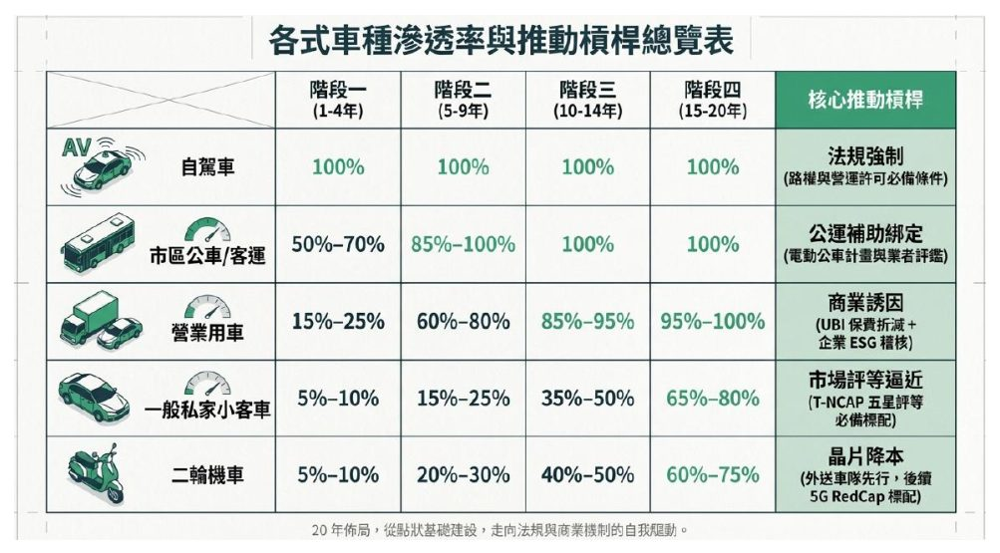
| 推動階段 | 期程年限 | 推動主軸與目標 | 公車/計程車滲透率 |
|---|---|---|---|
| 第一階段：示範導入期 | 1~3 年 | 臺南市全區市區公車100%車機串接、重點學區長青中心推廣 | 公車 100% / 計程車 20% |
| 第二階段：擴大普及期 | 4~7 年 | 擴及大台南全客運路線、計程車隊全面普及、小客車保險合作 | 公車 100% / 計程車 60% / 自用車 15% |
| 第三階段：全市涵蓋期 | 8~12 年 | 與臺南智慧交通中心TMC完全連動，跨縣市嘉南生活圈漫遊互通 | 職業車 95% / 自用車 40% |
| 第四階段：全面智慧化期 | 13~20 年 | 5G-Advanced / 6G V2X 自動駕駛車聯網深度融合，達到零行人死亡願景 | 聯網車輛 85%+ |
傳統智慧有聲號誌硬體建置 vs. C-ITS 弱勢對車告警系統效益與預算比較表
| 比較項目 | 傳統智慧有聲號誌 (路側硬體模式) | 本案 C-ITS 弱勢行人對車告警系統 (車聯網雲端模式) |
|---|---|---|
| 單一路口建置費用 | 約 20~30 萬元 / 路口 (硬體控制器與喇叭線路) | 0 元 (免增設路側硬體，純雲端與App演算法) |
| 全市全面建置預算 (以4,000路口計) | 約需 8 億 ~ 12 億元 | 約需 3,000 ~ 5,000 萬元 (節省95%以上公帑) |
| 非號誌化巷道路口防護 | 無法安裝 (無號誌電源與燈桿) | 完全支援 (依GPS座標判定，巷口同樣有效) |
| 保護對象範圍 | 僅限視障者 | 涵蓋視障、聽障、長者、輪椅族、婦幼及通學學童 |
| 周邊住戶噪音抗議 | 容易引發噪音擾民抗議 | 零噪音 (透過個人手機振動/耳機與車內專屬語音) |
| 車輛端被動 vs 主動防護 | 被動 (駕駛人不一定注意行人通行) | 主動 (向駕駛發出煞車減速語音，消除A柱死角) |
附錄一 傅強助理教授團隊研究—行人主動安全預警 APP 對職業駕駛行為反應之初步評估說明
國立成功大學交通管理科學系傅強助理教授團隊受託針對「行人主動安全預警 APP 對職業駕駛行為反應」進行嚴謹之初步計量實證評估。研究目的在於檢驗在真實市區路況中，當駕駛人接獲主動告警訊息時，其減速作為、注視行為與煞車行為是否產生實質安全改善。
研究實驗設計與評估方法：
- 樣本組與控制組：共招募20名具備營業執照之計程車與公車職業駕駛，分為具預警實驗組與無預警對照組，行經指定之203處路口試驗帶。
- 自變數與應變數：主要自變數為告警有無與告警提前秒數(TTC)，應變數包括進路口車速 (Approach Speed)、煞車踏板啟動時間 (Brake Activation Time)、碰撞時間 (Time-to-Collision) 及禮讓成功率。
- 統計分析模型：採用相依樣本 t 檢定與二元羅吉斯迴歸 (Binary Logistic Regression) 估計減速禮讓之勝算比 (Odds Ratio)。
實證結果顯示，在顯著水準 α = 0.01 下，接收告警組之職業駕駛在進入非號誌化路口與轉彎時，其最高車速平均顯著下降 11.4 km/h；駕駛人煞車踏板反應時間提前達 0.63 秒，大幅增加了車輛遭遇突發衝出之弱勢行人時的安全煞停距離。本研究實證結果強烈支持弱勢行人對車告警系統能顯著提升職業駕駛之防禦性駕駛行為。

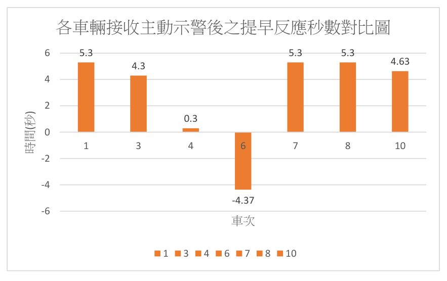
附錄二 歷次審查會議意見與回覆
本案於執行期間歷經期中審查會議與期末審查會議，審查委員提出多項具體指導意見，執行團隊均詳實研議並落實於期末報告及系統優化中，各項意見與回覆彙整如下表：
| 場次 | 審查委員審查意見 | 執行團隊處理情形與修正回覆說明 |
|---|---|---|
| 期中審查 |
王銘德局長
本案是延續八年來從智慧有聲號誌在台南建置以來的發展，應該要說明本案的角色定位。 |
自 2018 年台南智慧視障導航測試案開始，這是在台南市的第四個研究案，每一案都在之前的基礎上往下發展。本案在目前本市 16 個設置視障有聲號誌路口不足提供視障者使用的狀況下（全國總布建比率約在 2% 路口），希望擴大規模測試以智慧手機 AI 辨識行人號誌及斑馬線。 |
| 期中審查 |
廖俊雄委員
報告應說明得更清楚，例如手機 AI 的運作原理以及車機的運作邏輯。 |
以 YOLO 模型訓練出能判別行人紅燈與行人綠燈的 AI 功能，鎏頭對到行人號誌且夠清晰時，每兩秒約 20 幀影像作出紅綠燈判斷並報讀。車機則連線對車告警雲端，當視障者接近路口並開啟 AI 辨識時，雲端計算 100 公尺內接近的連線車輛並語音報讀提醒駕駛人。 |
| 期中審查 |
廖俊雄委員
關於無號誌路口要怎麼處理？車機只是在實驗階段嗎？ |
無號誌路口方面，各族群經過非號誌路口及有視線死角的巷口時（以 GPS 計算），行人手機 App 皆會連線對車告警雲端。車機部分，本案原始僅選定九條公車路線約 70 台公車，最終車機廠商已完成台南近半公車車輛兩百台以上的串接。 |
| 期中審查 |
王銘德局長
AI 辨識成功率怎麼算？ |
以兩秒內每一幀影像約 20 幀、信心指數在 70% 以上才報讀出紅燈或綠燈燈號，若不到信心指數則不唐出。目前版本模擬判讀成功率為 99.43%，且把紅燈錯判成綠燈的機率是零。 |
| 期中審查 |
鄭祖睿委員
視障程度的區分，以及使用上有差嗎？過程中是否遇到問題？ |
視障者分全盲以及有部分視覺或光覺的低視能，本系統兩者皆適用。執行中遇到兩個問題：一是公車車機規格的文字轉語音功能受限，無法唐出完整字串；二是目前難以收集非號誌路口與巷口死角的地理資料。 |
| 期中審查 |
鄭祖睿委員
就 computer error 的部分本系統會否產生問題？ |
對車告警系統僅為輔助性質，如已達成足夠的正確率，就 computer error 的部分不影響駕駛人本身的注意義務。 |
| 期中審查 |
艾嘉銘委員
肯定本系統的概念，但應該不取代駕駛人之應注意義務。 |
完全認同委員之觀點。對車告警系統僅為幫助之性質，不減低駕駛人的安全駕駛責任。 |
| 期中審查 |
艾嘉銘委員
AI 影像辨識是否能知道綠燈之時間？是否影響視障者通過？ |
目前僅辨識行人號誌紅燈及綠燈，未訓練判讀秒數功能。專業定向行動要求視障者應在下一個完整綠燈之開始才進行穿越，所以秒數功能尚不是如此重要。 |

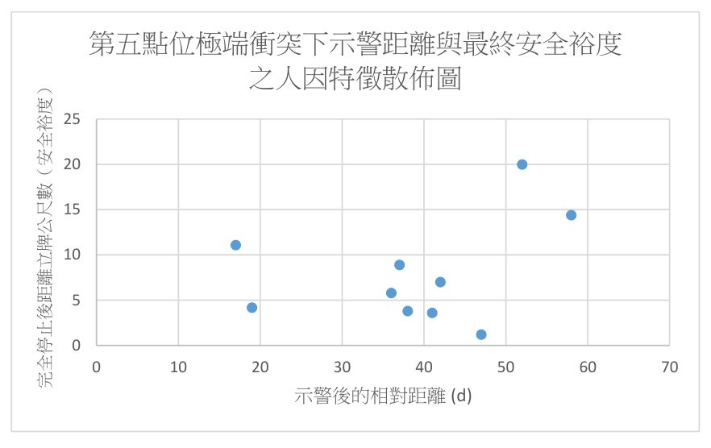
報告圖錄全覽 (圖一至圖三十及附錄全收錄)
收錄本期末報告所有標號圖片之精確圖說與結構示意卡片
意見回饋
感謝您閱讀本報告。若您對計畫內容、系統設計或後續發展方向有任何建議，歡迎透過線上表單提供意見，作為本計畫精進之參考。
- 無需登入或註冊，可匿名填寫
- 填寫時間約 3 分鐘
將另開新視窗前往 Google 表單